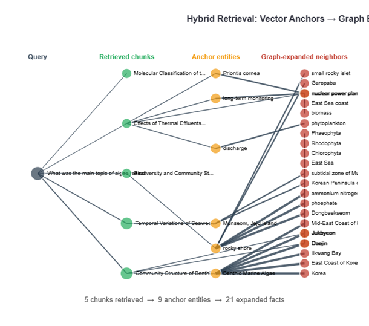
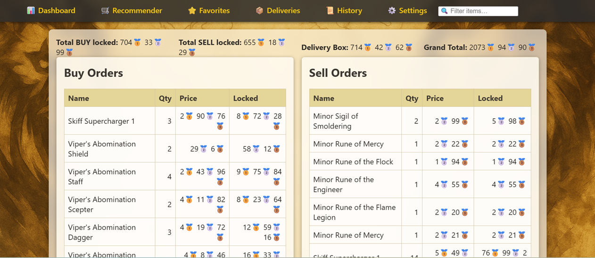

Selected Projects
AlgaeBot — Hybrid GraphRAG for Scientific Literature
Production RAG system over 879 peer-reviewed PDFs. Full pipeline: PDF extraction with OCR fallback, recursive chunking (~32k chunks), knowledge graph construction (~60k entities, 100k+ edges), two-stage summarization, multi-query retrieval with cross-encoder reranking. Factorial ablation study isolating graph expansion and community summaries with statistical validation. +4.8% faithfulness over baseline. Paper under review at KONVENS 2026.


Deep Learning Portfolio
From-scratch implementations: CNNs, RNNs/LSTMs, autoencoders, VAEs, GANs, Transformers, plus backpropagation and SGD variants. Built across coursework and self-study.
Vision Transformer for Plant Disease Classification
Fine-tuned ViT with custom attention heads. Highest grade (12/12) on oral exam.
Quantitative Trading System
End-to-end trading advisor: Weibull survival model for order-fill probability, linear program for capital allocation. Ranked top 0.1% of 460,000+ accounts by actively traded capital.
